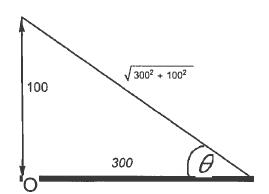

- (a)
- Express the angle \(\theta \) as the function of \(x\), the distance of the boat from the building.
- (b)
- The boat is sailing directly toward the skyscraper at \(3\) m/s. Find \(\dd [\theta ]{t}\) when the boat
is \(x=300\)m from the building. [3] \begin{align*} \frac {d\theta }{dt}&=\dd {t}\tan ^{-1}\left ( \frac {100}{x} \right )\\ &=\dd {x}\tan ^{-1}\left ( \frac {100}{x} \right )\dd [x]{t}\\ &=\frac {1}{1+\left (\frac {100}{x}\right )^2} \cdot \frac {-100}{x^2} \dd [x]{t}\\ &=\frac {1}{1+\left (\frac {100}{x}\right )^2} \cdot \frac {-100}{x^2} \cdot (-3)\\ &=\frac {300}{x^2+100^2}\\\\ \end{align*}\begin{align*} \eval {\dd [\theta ]{t}}_{x=300}&=\frac {300}{300^2+100^2}\\ &=\frac {3}{900+100}\\ &=\frac {3}{1000}\\ &=0.003\ \text {rad/sec} \end{align*}
Alternatively, this problem could be done without inverse functions.
\begin{align*} \tan \theta &=\frac {100}{x}\\ \dd {t}(\tan \theta )&=\dd {t} \left (\frac {100}{x}\right )\\ \sec ^2\theta \dd [\theta ]{t}&=\frac {-100}{x^2}\dd [x]{t} \end{align*}We have to evaluate \(\sec ^2\theta \) at the moment when \(x=300\)m
Using the triangle above, we have:
\(\sec \theta =\frac {\sqrt {300^2+100^2}}{300}=100\frac {\sqrt {3^2+1^2}}{300}=\frac {\sqrt {10}}{3}\), we obtain:\begin{align*} \left (\frac {\sqrt {10}}{3}\right )^2 \eval {\dd [\theta ]{t}}_{x=300}&=-\frac {100}{300^2}(-3)\\ \eval {\dd [\theta ]{t}}_{x=300}&=\frac {1}{300} \cdot \frac {9}{10}=\frac {3}{1000}\ \text {rad/sec} \end{align*}